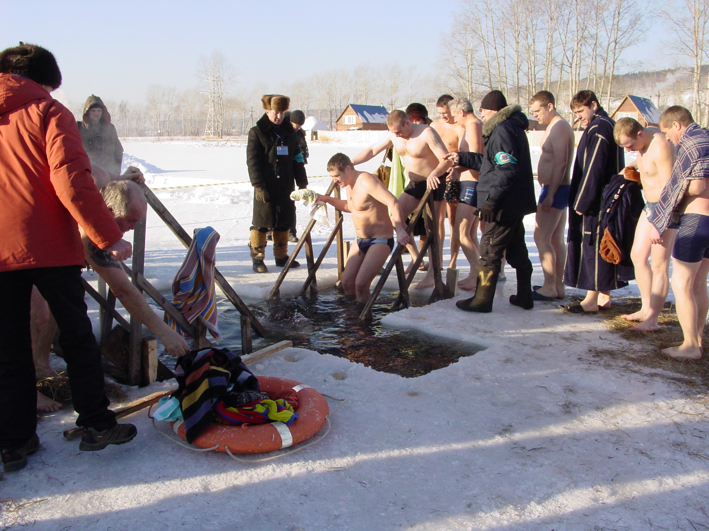

Сколько себя помню на крещение всегда мороз. Как бы не было тепло, но 19 января всегда мороз. На крещение и когда черемуха цветет. Вчера морозно не было. Наоборот потеплело, чтобы смог каждый желающий. Желающих много было.

Для меня вера в бога это что-то личное, не сочетаемое с коллективными песнопениями, очередями чтобы посмотреть на мощи и другими концертами поп-звезд. Чтобы окунуться в проруби была очередь. Можно было не окунаться, а просто посмотреть. Все равно верующий, но холодная голова и болячки в воду лезть не позволяют. А хотелось бы.
В древней Греции остригали волосы когда забирали в рабство. Острижение пряди при крещении символизирует нечто похожее. Ну может не совсем рабство — покорность скорее. Воле бога.
В Кемерове смыть грехи можно было в «озере» Красном. Летом в нем купаться нельзя, а зимой, на Крещение, смывать грехи можно. Может поэтому и летом нельзя, что там грехов столько? За день чуть менее грешыми стали около 300 кемеровчан, а всего по Кузбассу около 3200 человек.
Сибирякам повезло. На Крещение можно не просто совершить ритуал. Можно еще одновременно показать удаль. Мол зашел в воду холодную. Она говорят не болеть помогает. Это как сквозь огонь немножко пройти, только проще. Подозреваю, что в какой-нибудь Анапе эффект не тот.